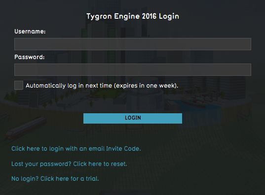
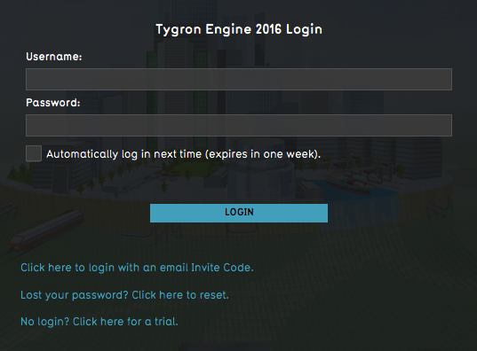

import logging; reload(logging)
FORMAT=("%(asctime) -8s %(message) s")
logging.basicConfig(format=FORMAT, filename="TestLog.txt", level=logging.DEBUG)
logging.info("[info] Check for Operating System...")
myVer = Settings.getOSVersion()
if Settings.isLinux():
print "Linux detected! " + myVer
logging.info("[info] Linux detected !" + myVer)
find(Pattern().similar(0.89))
doubleClick(Pattern().similar(0.84))
doubleClick( )
click(Pattern().targetOffset(237,52))
elif Settings.isWindows():
print "Windows detected! " + myVer
logging.info("[info] Windows detected !" + myVer)
doubleClick(Pattern().similar(0.80))
elif Settings.isMac():
print "Mac OSX detected! " + myVer
logging.info("[info] MAC OSX detected !" + myVer)
click()
click(Pattern(
)
click(Pattern().targetOffset(237,52))
elif Settings.isWindows():
print "Windows detected! " + myVer
logging.info("[info] Windows detected !" + myVer)
doubleClick(Pattern().similar(0.80))
elif Settings.isMac():
print "Mac OSX detected! " + myVer
logging.info("[info] MAC OSX detected !" + myVer)
click()
click(Pattern( ).targetOffset(59,11))
doubleClick()
#wait("1458652391503.png", 3)
#click(Pattern("1458652391503.png").targetOffset(145,62))
else:
print "Unsupported OS detected!"
logging.error("[error] Unsupported OS detected!")
exit(1)
if exists(, 10) or exists(
).targetOffset(59,11))
doubleClick()
#wait("1458652391503.png", 3)
#click(Pattern("1458652391503.png").targetOffset(145,62))
else:
print "Unsupported OS detected!"
logging.error("[error] Unsupported OS detected!")
exit(1)
if exists(, 10) or exists( , 10):
print "[success] Engine started!"
logging.info("[success] Engine started!")
else:
print "[error] Engine not started!"
logging.error("[error] Engine not started!")
exit(1)
, 10):
print "[success] Engine started!"
logging.info("[success] Engine started!")
else:
print "[error] Engine not started!"
logging.error("[error] Engine not started!")
exit(1)